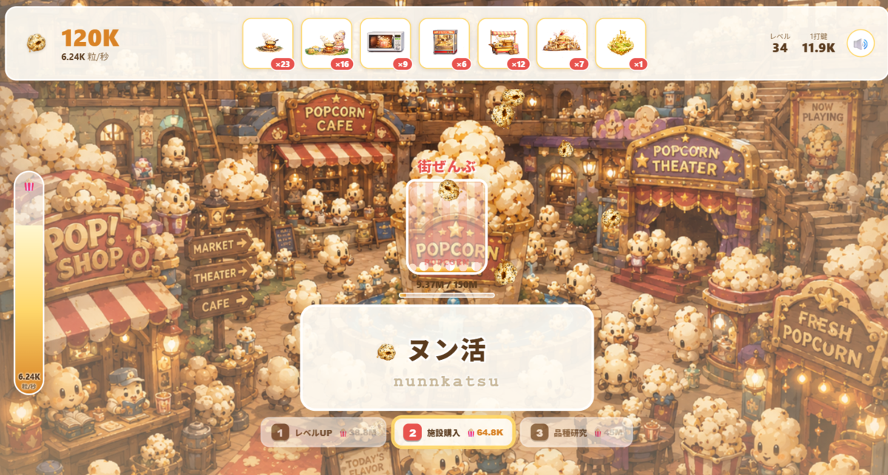

Popcorn Typing
A snappy idle typing game where every keystroke pops popcorn to a satisfying rhythm. Great romaji typing practice, too. A keyboard game, for PC.

Read the guide below, or load the game when you are ready.
Best played on a PC with a keyboard. English controls and help are available; the practice text and story are Japanese - you type hiragana words using romaji (Latin letters), so it's great practice if you're learning Japanese.
An idle typing game where every key you press sends popcorn popping and piling up. Type to fill your container and it keeps upgrading: cup, bucket, truck, building, whole city. Even when you stop typing, your facilities keep roasting popcorn on their own, so it quietly grows while you're away. A nice companion for typing practice, too.
These figures come from the game's own settings, as of September 2026.
At a Glance
| Genre | Idle typing / clicker |
|---|---|
| Price | Free, no install, no sign-up |
| Platform | PC recommended (keyboard controls) |
| Input | Romaji (Latin letters; turn Japanese IME off if you have one) |
| Language | English controls and help; Japanese practice text — type hiragana words in romaji |
| Vocabulary | 378 prompts in the combined word list |
| Containers | 16 named, from an S cup to the entire universe, then endless |
| Facilities | 7, from a frying pan to Popcorn World |
| Varieties | 4, the last of which upgrades forever |
| Ranking | Online top 100, shared by all players |
| Saves | Auto-saved every 5 seconds in your browser |
How to Play
Click ▶ はじめる (Start), then copy the Latin-letter prompt. The Japanese words stay in Japanese; their displayed romaji tells you which keys to press. For example, neko is typed N, E, K, O. Use keys 1, 2 and 3 or their matching buttons for upgrades.
- 1 — レベルUP (Level Up): increases how much popcorn each keystroke makes. The basic upgrade for strengthening your manual typing
- 2 — 施設購入 (Buy Facilities): add auto-roasters like frying pans, microwaves, and factories. This is what determines your idle production
- 3 — 品種研究 (Variety Research): ranks up your popcorn variety, sending your per-keystroke output shooting up. Reach for this when you stall out
In normal mode, each correct keystroke earns variety output × level × combo multiplier. Completing a word adds kana length × that per-keystroke output × 5, using the combo at completion. The length is the Japanese kana string, not the number of romaji keys. Enter skips the current prompt: it keeps earnings already gained from correct keys but gives no completion bonus.
The Combo
Consecutive correct characters build the combo. A mistake resets the combo count to zero and the multiplier to ×1.
| 10 in a row | ×2 |
|---|---|
| 25 | ×3 |
| 50 | ×4 |
| 100 | ×6 |
| 200 | ×10 |
Going from 100 to 200 consecutive correct characters raises the multiplier from ×6 to ×10, a gain of about 67%. Accuracy helps at every combo tier. If rushing repeatedly breaks your streak, try a pace that lets you finish words reliably.
Four Varieties
There are four varieties, including the starting one. The listed output is before level and combo multipliers.
- Ordinary Corn — 1 kernel per character. Where everyone starts
- Caramel Corn — 15 per character, for 2,500
- Truffle Salt Corn — 350 per character, for 250,000
- Solid Gold Corn — 9,000 per character, for 20 million, and it has no ceiling. Every further research doubles it
Seven Facilities
Facilities produce popcorn automatically. These are their base rates and first-purchase prices; normal typing output separately depends on your variety, level and combo.
| Frying Pan | 1.5 per second, 60 |
|---|---|
| Frying Pan + Grandma | 5 per second, 400 |
| Microwave | 16 per second, 3,000 |
| Cinema Machine | 50 per second, 24,000 |
| Street Puffed-Rice Cannon | 140 per second, 180,000 |
| Giant Popcorn Factory | 400 per second, 1.5 million |
| Popcorn World | 1,200 per second, 12 million |
Each purchase makes the next facility of that kind 18% more expensive. The purchase button chooses the cheapest affordable unowned type first; if no unowned type is affordable, it chooses the highest-tier affordable type.
Sixteen Containers
The container is the goal, and filling one hands you a reward worth half its capacity and swaps in a bigger one. S cup, M cup, L cup, mega bucket, oil drum, market cart, dump truck, an entire building, a large mountain, the whole town, the Japanese archipelago, the Earth, the Earth and the Moon together, the solar system, the Milky Way, and then the entire universe.
From the Earth onward the background leaves the ground and goes to space, and the music changes with it — there are five stages of scenery and six tracks, all keyed to which container you are on. And the universe is not the end. Past it each container simply needs eight times what the last one did, forever.
After You Fill the Universe
Filling the sixteenth named container unlocks a replay mode with a ×100 production factor. The game also supports containers beyond the named list, with the capacity multiplied by eight at each step.
The Ranking
Enter a name of up to twelve characters and your total lands on a board shared by everyone playing, showing the top 100. It updates itself as you play rather than only at the end, so leaving the game running does count.
A Useful First Session
Start with correct keys and complete a few prompts. Use 1 to raise your level, then 2 when you can afford your first facility. Watch the per-keystroke and per-second counters separately: one measures typing output and the other measures facility income. Saving for Caramel Corn costs 2,500 kernels and raises the variety's base output from 1 to 15.
This is practice copying romaji, not a vocabulary course. It does not explain the meaning or pronunciation of every prompt. The English instructions here translate the main controls; menus inside the game remain Japanese.
From the Developer
The decision I went back and forth on longest was keeping the facilities weak. Every idle game I have played eventually stops needing you, and the moment it does I stop opening it. I wanted the machines to support the rhythm of typing instead of taking over the game. That is the design intention; the actual balance depends on your typing speed and the upgrades you buy.
Combos, upgrades and offline earnings are broken down in the Popcorn Typing tips.
FAQ
- Can I play on a phone?
- It's a keyboard game, so we recommend playing on a PC.
- Do I need to read Japanese?
- No. Prompts are shown in hiragana with the romaji to type, so you are always copying Latin letters. It works as Japanese typing practice if you are learning, and as plain typing practice if you are not.
- Does it keep going while I'm away?
- Facilities produce while the game runs. When you return after closing it, offline earnings are credited at 50% of your facility rate for up to eight hours.
- Why is my combo resetting?
- One wrong character resets the combo count to zero and its multiplier to 1x. The maximum is 10x at 200 consecutive correct characters.
- Is there an end?
- Filling the sixteenth container, the universe, clears the game and unlocks a 100x cheat mode. After that containers keep growing by eight times each, indefinitely.
- Will I lose my progress?
- It saves to your browser every five seconds. Clearing your browser's site data will erase it, and it does not transfer to another device.
Credits
Music
· "Poppin' heart feat. Mai Shirai" — composed by Hajime Ryuzaki / lyrics by Mai Shirai / vocals by Tsukino Hikari and Mai Shirai
· "Funky_droll_street" — by Sachiko Kamaboko
Popcorn sound effects
· by Takashi Kouya
Other free assets that do not require attribution are also used.